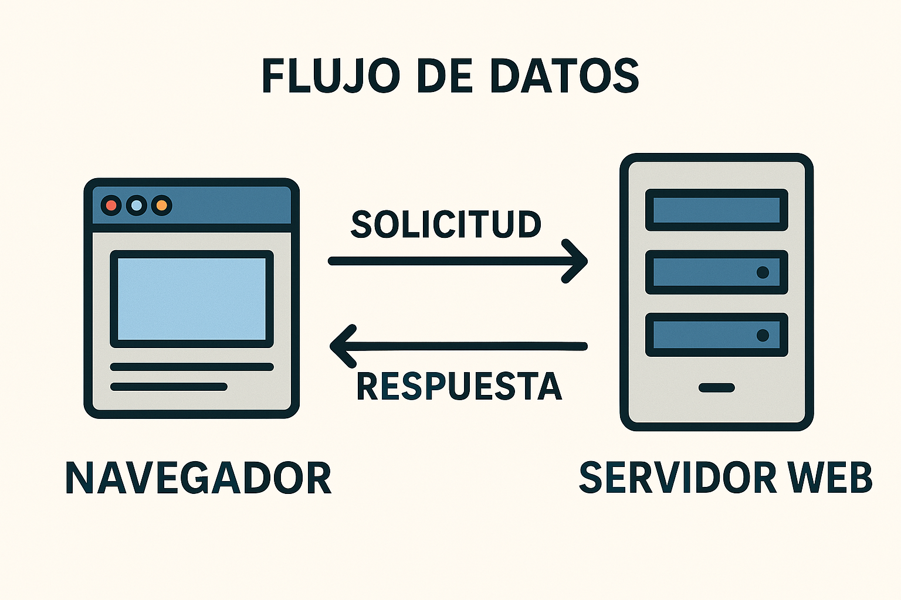

Tema 1
Fundamentos de la Web
Aplicaciones Web – Ing. Danny Páez
¿Qué es Internet?
- Internet es una red global que conecta millones de computadoras en todo el mundo.
- Permite compartir información usando protocolos estándar como TCP/IP.
- Es la infraestructura que permite acceder a servicios como la web, el correo, redes sociales y más.
Componentes clave de Internet
- Clientes: dispositivos como tu computadora o celular que acceden a la red.
- Servidores: computadoras que entregan sitios web o datos cuando se solicitan.
- Proveedores de Internet (ISP): empresas que te conectan a la red.
- Routers y switches: dispositivos que enrutan la información.
- Cables submarinos y satélites: permiten la conexión global.
¿Qué pasa cuando visitas una web?
-
Escribes una dirección como
www.google.comen el navegador. - Tu dispositivo consulta el DNS para obtener la IP del servidor.
- El navegador envía una solicitud al servidor usando el protocolo HTTP o HTTPS.
- El servidor responde con archivos HTML, CSS, JS, imágenes, etc.
- Tu navegador interpreta esos archivos y muestra el sitio web.
Diagrama del proceso

Fuente: Wikipedia - Estructura básica del funcionamiento de Internet
¿Qué es el DNS?
- El DNS (Domain Name System) traduce nombres de dominio a direcciones IP.
-
Funciona como una agenda de contactos: convierte
www.netflix.comen198.38.96.11.
¿Qué es HTTP y HTTPS?
- HTTP (HyperText Transfer Protocol) es el protocolo que permite la transferencia de datos en la web.
- HTTPS es la versión segura de HTTP, que cifra los datos entre el cliente y el servidor.
¿Qué es un paquete de datos?
- La información en Internet se divide en paquetes de datos.
- Cada paquete lleva parte del mensaje, y todos viajan por rutas distintas hasta llegar a destino.
- El protocolo TCP se encarga de que los paquetes lleguen completos y ordenados.
Tipos de Hosting
¿Qué es una aplicación web?
- Es un tipo de software que se ejecuta en un servidor y se accede a través de un navegador web.
- No necesita instalarse en el dispositivo del usuario.
- Permite a los usuarios interactuar con interfaces gráficas desde cualquier lugar con conexión a Internet.
Ejemplos comunes de aplicaciones web

- Gmail, Outlook Web – correo electrónico
- Facebook, Instagram Web – redes sociales
- Google Drive – almacenamiento en la nube
- Netflix – transmisión de video
- Tiendas online como Amazon, MercadoLibre
Componentes principales
- Cliente (frontend): lo que ve y usa el usuario (HTML, CSS, JS).
- Servidor (backend): donde se procesa la lógica y se accede a la base de datos.
- Base de datos: almacena la información de manera estructurada.
Frontend
Es la parte visible de la aplicación. Incluye:
- La estructura (HTML)
- El diseño visual (CSS, Tailwind)
- La interactividad (JavaScript)
El código del frontend se ejecuta en el navegador del usuario.
Backend
Es la lógica que corre en el servidor.
- Procesa peticiones del usuario.
- Interactúa con la base de datos.
- Entrega respuestas al cliente en formato JSON o HTML.
Se programa con lenguajes como PHP (Laravel), Node.js, Python (Django), etc.
Flujo de datos
¿Qué sucede cuando haces clic en \"Iniciar sesión\"?
- El navegador envía los datos al servidor (usuario, contraseña).
- El backend verifica en la base de datos si son correctos.
- El servidor responde con una página o mensaje.
Este ciclo se repite constantemente en cualquier interacción.
Esquema de funcionamiento
Resumen de la sección
- Una aplicación web es software que se accede desde un navegador.
- Está compuesta por frontend, backend y base de datos.
- El flujo de datos conecta las acciones del usuario con respuestas del servidor.
¿Qué es HTML?

HTML significa HyperText Markup Language, es el lenguaje que estructura el contenido de una página web.
- Define títulos, párrafos, enlaces, imágenes, formularios, etc.
- Es interpretado por el navegador para mostrar el contenido visualmente.
- No es un lenguaje de programación, es un lenguaje de marcado.
Estructura básica de una página HTML
<!DOCTYPE html>
<html>
<head>
<title>Mi Sitio</title>
</head>
<body>
<h1>Bienvenido</h1>
<p>Esta es mi primera página web.</p>
</body>
</html>
¿Qué significa cada parte?
-
<!DOCTYPE html>indica al navegador que es un documento HTML5. -
<html>es el contenedor raíz de toda la página. -
<head>contiene metadatos (título, estilos, scripts). -
<body>contiene todo lo visible por el usuario.
Etiquetas semánticas comunes
-
<header>: encabezado del sitio o sección -
<main>: contenido principal -
<section>: grupo temático de contenido -
<article>: contenido independiente (como una noticia) <footer>: pie de página
Otras etiquetas importantes
-
<h1> ... <h6>: encabezados <p>: párrafos<img>: imágenes<a>: enlaces-
<ul>,<li>: listas -
<form>,<input>,<button>: formularios
Ejemplo con varias etiquetas
<h1>Contacto</h1>
<p>Escríbenos usando el siguiente formulario:</p>
<form>
<label>Nombre:</label>
<input type=\"text\" name=\"nombre\" />
<label>Mensaje:</label>
<textarea name=\"mensaje\"></textarea>
<button type=\"submit\">Enviar</button>
</form>
Buenas prácticas con HTML
- Usar indentación para mantener el código legible.
- Incluir etiquetas semánticas para accesibilidad y SEO.
- Validar el HTML con herramientas como W3C Validator.
- Más información en Tutorial HTML.
-
Agregar el atributo
alten imágenes.
¿Qué es CSS?

CSS significa Cascading Style Sheets y se usa para definir la apariencia de un sitio web.
- Permite aplicar estilos a las etiquetas HTML.
- Controla colores, tamaños, márgenes, fuentes, posiciones, etc.
- Se puede aplicar de forma interna, externa o en línea.
Ejemplo de CSS interno
<style>
body {
background-color: #f0f0f0;
font-family: Arial, sans-serif;
}
h1 {
color: blue;
}
</style>
Modelo de caja (Box Model)
- Todo elemento HTML se representa como una caja rectangular.
- Estas cajas están compuestas por: content, padding, border y margin.

¿Qué es Flexbox?
- Es un modelo de diseño flexible en CSS.
- Permite distribuir el espacio entre elementos de forma dinámica.
- Ideal para crear diseños adaptativos y alineaciones rápidas.
Activar Flexbox
.contenedor {
display: flex;
}
El contenedor se convierte en "flex container" y sus hijos en "flex items".
Propiedad: justify-content
-
flex-start: alinea elementos a la izquierda. -
center: centra los elementos horizontalmente. -
flex-end: alinea elementos a la derecha. -
space-between: espacio entre los elementos. -
space-around: espacio antes, entre y después de los elementos.
Propiedad: align-items
-
stretch: ajusta la altura para llenar el contenedor (por defecto). flex-start: alinea arriba.-
center: alinea al centro verticalmente. flex-end: alinea abajo.
Propiedad: flex-wrap
- Por defecto, los ítems se quedan en una sola línea.
-
Con
flex-wrap: wrappermitimos que pasen a otra línea si es necesario.
Propiedad: gap
- Agrega espacio entre los elementos hijos.
- Funciona en ejes horizontal y vertical.
.contenedor {
display: flex;
gap: 1rem;
}
Resumen de Flexbox
- Flexbox es una forma eficiente de organizar y alinear contenido.
-
Propiedades clave:
display: flex,justify-content,align-items,flex-wrap,gap. -
Tailwind usa clases basadas en estos conceptos:
flex,justify-center,items-center,gap-4.
¿Qué es el diseño responsivo?
- Adaptar la página a diferentes tamaños de pantalla.
- Optimizar la experiencia en móviles, tablets y PCs.
- Evitar el "scroll" horizontal y mejorar la legibilidad.
¿Qué es un media query?
Un media query aplica reglas CSS solo si se cumple una condición en el tamaño de pantalla.
@media (max-width: 768px) {
body {
background-color: lightblue;
}
}
¿Qué es Mobile First?
- Diseñar pensando primero en dispositivos móviles.
- Luego adaptarse a pantallas más grandes usando media queries.
-
Es la filosofía que usa Tailwind (ej:
md:,lg:).
Ejemplo: Mobile First
p {
font-size: 14px;
}
@media (min-width: 768px) {
p {
font-size: 18px;
}
}
Primero el estilo para móviles, luego para pantallas mayores.
¿Qué podemos cambiar con media queries?
-
Tamaños de fuente (
font-size). -
Espaciados (
margin,padding). - Layout: cambiar de fila a columna en Flexbox.
- Mostrar u ocultar elementos.
Resumen de Responsivo
- Media queries permiten adaptar el sitio a distintos dispositivos.
- Mobile First es la estrategia moderna más usada.
-
Tailwind simplifica esto con clases como
sm:,md:,lg:.
¿Qué es Tailwind CSS?
- Es un framework de CSS basado en clases utilitarias.
- Permite escribir estilos directamente en el HTML.
- Ideal para desarrollo rápido y diseño responsivo.
- No necesita crear clases personalizadas (aunque se puede).
Ejemplo de botón con Tailwind
<button class=\"bg-blue-500 text-white px-4 py-2 rounded\">
Enviar
</button>
Diseño responsivo con Tailwind
-
Utiliza modificadores como
sm:,md:,lg:para diferentes tamaños de pantalla. -
Ejemplo:
sm:text-lg md:text-xl - Permite ocultar o mostrar elementos dependiendo del dispositivo.
Grid layout en Tailwind
<div class=\"grid grid-cols-2 gap-4\">
<div class=\"bg-gray-200 p-4\">Columna 1</div>
<div class=\"bg-gray-300 p-4\">Columna 2</div>
</div>
CSS tradicional vs Tailwind
- CSS tradicional: requiere escribir reglas separadas en un archivo .css
- Tailwind: aplica estilos como clases directamente en el HTML
Ambos métodos son válidos. Tailwind acelera el desarrollo visual.
Buenas prácticas con Tailwind
-
Usa clases semánticas:
text-center,bg-red-500, etc. - Evita escribir clases duplicadas sin necesidad.
- Aprovecha la documentación oficial: tailwindcss.com
✅ Resumen: Fundamentos de la Web
- Una aplicación web es un sistema accesible desde el navegador, compuesto por cliente, servidor y base de datos.
- El frontend muestra la interfaz del usuario (HTML, CSS, JS), y el backend procesa la lógica y datos.
- HTML define la estructura de las páginas web usando etiquetas semánticas.
- CSS estiliza los elementos, permitiendo controlar colores, márgenes, posiciones, etc.
- Tailwind CSS es un framework moderno que permite aplicar estilos directamente desde clases utilitarias en el HTML.
- El diseño responsivo asegura que la web se vea bien en distintos dispositivos (móviles, tablets, PCs).